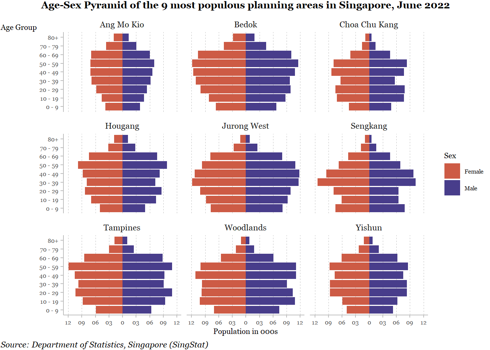

pacman::p_load(dplyr, ggiraph, ggplot2, patchwork, ggthemes, hrbrthemes, ggrepel, RColorBrewer, gridExtra, extrafont, tidyverse)Take Home Exercise 2
The objective of this exercise is to critique the age-sex population pyramid by nine planning areas trellis chart of one of our peers and offer enhancements in R Studio by using visualization analytics and application best practices taught in lecture 1 and lecture 2.
1. Original Design
The trellis chart (butterfly bar chart) used for visualization is good for representing the sex distribution by age-groups in different planning areas.
1.1. Clarity:
1.1.1. Non-descriptive graph title:
The criteria for selecting the nine planning areas is unclear from the title. Also, the year of population age-sex pyramid analysis is unclear from the title.
1.1.2. No age-band grouping:
Grouping the 5-year age bands into 10-years or any other grouping would make the y-axis clean and more readable for the viewer.
1.1.3. Missing title for age-bands on the y-axis:
The y-axis has no title that mentions that the axis represents age-bands for the population.
1.1.4. No fixed scale:
X-axis labels are missing, making it difficult for the viewer to know the figures for male and female population. Also, the x-axis scale across nine panels is not fixed. This makes comparison of information across nine planning regions challenging for the viewer.
1.1.5. Missing legend:
The legend describing the colour of the bars on the left- and the right-side of the trellis chart is missing. The viewer thus has to assume that the pink bars represent female population and the blue bars represent the male population.
1.1.6. No data source information:
Including the data source information enhances the credibility of the trellis chart figures.
1.2. Aesthetics:
1.2.1. Charts in different sheets:
The trellis chart for each of the nine regions have been created in nine different sheets and then paneled together in the Tableau dashboard. This results in creation of y-axis nine times, reducing the dashboard white space for expanding the trellis charts.
1.2.2. Missing bar labels:
Having labels for the bars enhances the readability for the viewer. Hence, including labels can be good practice, especially when there are many bars in the trellis charts.
1.2.3. Enhanced age axis:
Currently, the labels for the age axis are generic (i.e. they are same as provided by the data source) and not enhanced for aesthetics. Editing the axis labels for better readability can beautify the trellis chart.
1.2.4. Non-supportive grid lines:
As population labels are missing on the x-axis, the grid lines in the trellis charts are redundant as they provide not supportive information.
2. Proposed Design
2.1. The sketch:
The sketch is the design for the age-sex population pyramid for one of the chosen nine planning areas. The chart will be replicated and modified for the rest of the other eight planning areas. The sketch details the enhancements to the original chart design.

2.2. Getting started:
2.2.1. Installing the necessary packages:
To start using ggplot2, ggiraph, and tidyverse packages for analysis and visualization, we load the libraries using the pacman package and p_load function in R Studio. We load other packages as well to support formatting of the ggplot.
font_import()
loadfonts(device = "win")2.2.2. Importing the data:
Next, we import the Age-Sex Population Data of Singapore for data manipulation and creating the trellis chart for the nine planning areas.
Population_data <- read_csv("data/TH02_AgeSexPop.csv")Rows: 1980 Columns: 5
── Column specification ────────────────────────────────────────────────────────
Delimiter: ","
chr (4): Sex, Planning Area, Age Group, Pop_Proportion
dbl (1): Population
ℹ Use `spec()` to retrieve the full column specification for this data.
ℹ Specify the column types or set `show_col_types = FALSE` to quiet this message.2.3. Data wrangling:
Step 1 - Combining the age-bands
We regroup the data into ten-year age bands from the five-year age bands. We do this to minimize the level of details for the viewer. This helps to create a clean, condensed yet informational chart that is comparatively easier, than the detailed chart, for the viewer to comprehend.
Population_data$Age_groups <- with(Population_data,
dplyr::case_when(`Age Group` %in% c("0 - 4", "5 - 9") ~ '0 - 9',
`Age Group` %in% c("10 - 14", "15 - 19") ~ '10 - 19',
`Age Group` %in% c("20 - 24", "25 - 29") ~ '20 - 29',
`Age Group` %in% c("30 - 34", "35 - 39") ~ '30 - 39',
`Age Group` %in% c("40 - 44", "45 - 49") ~ '40 - 49',
`Age Group` %in% c("50 - 54", "55 - 59") ~ '50 - 59',
`Age Group` %in% c("60 - 64", "65 - 69") ~ '60 - 69',
`Age Group` %in% c("70 - 74", "75 - 79") ~ '70 - 79',
`Age Group` %in% c("80 - 84", "85 & Over") ~ '80+'))Step 2 - Selecting the planning areas
As per the problem statement, we need to select nine planning areas of Singapore and present the age-sex population pyramid for the user. For this exercise, we select the top nine most populous planning areas of Singapore in 2022.
Step 3 - Creating a data subset
Based on the chosen nine planning areas, we create a subset from the main dataset. Such a subset makes it easy to further wrangle and visualize the data using ggplot2 and tidyverse.
data_PA <- Population_data %>%
group_by(`Planning Area`) %>%
summarise(sum_pop = sum(Population), .groups = 'drop') %>%
arrange(sum_pop,.by_group = TRUE) %>%
top_n(9)Selecting by sum_popdata_PA# A tibble: 9 × 2
`Planning Area` sum_pop
<chr> <dbl>
1 Choa Chu Kang 174430
2 Ang Mo Kio 174920
3 Yishun 202060
4 Sengkang 206730
5 Hougang 222450
6 Woodlands 250270
7 Tampines 261300
8 Jurong West 272810
9 Bedok 289850data_top9 <- Population_data %>% filter(`Planning Area` %in% c("Choa Chu Kang", "Ang Mo Kio", "Yishun", "Sengkang", "Hougang", "Woodlands", "Tampines", "Jurong West","Bedok"))
str(data_top9)spc_tbl_ [324 × 6] (S3: spec_tbl_df/tbl_df/tbl/data.frame)
$ Sex : chr [1:324] "Female" "Female" "Female" "Female" ...
$ Planning Area : chr [1:324] "Ang Mo Kio" "Ang Mo Kio" "Ang Mo Kio" "Ang Mo Kio" ...
$ Age Group : chr [1:324] "0 - 4" "5 - 9" "10 - 14" "15 - 19" ...
$ Population : num [1:324] 3310 3790 4100 4600 5180 5810 6450 6890 7100 6670 ...
$ Pop_Proportion: chr [1:324] "3.65%" "4.18%" "4.52%" "5.07%" ...
$ Age_groups : chr [1:324] "0 - 9" "0 - 9" "10 - 19" "10 - 19" ...
- attr(*, "spec")=
.. cols(
.. Sex = col_character(),
.. `Planning Area` = col_character(),
.. `Age Group` = col_character(),
.. Population = col_double(),
.. Pop_Proportion = col_character()
.. )
- attr(*, "problems")=<externalptr> 2.4. Final outcome:
We use ggplot2 attributes to visualize the data and modify them to meet our sketch design. This helps us to create enhanced version of the initial design.
data_top9 <- data_top9 %>% mutate(tooltip_text = paste0("Population actuals ", data_top9$Population, "\n", "Population Proportion ", data_top9$Pop_Proportion))
pp <- ggplot(data = data_top9, aes(x = Age_groups, y = Population, fill = Sex, )) +
geom_bar(data = data_top9 %>% filter(Sex == "Male"),
stat = "identity", position = "identity") +
#, aes(tooltip = tooltip_text, data_id = Age_groups))
geom_bar(data = data_top9 %>% filter(Sex == "Female"),
stat = "identity",
position = "identity",
mapping = aes(y = -(Population))) +
labs (x = "Age Group", y = "Population in 000s", title = str_wrap("Age-Sex Pyramid of the 9 most populous planning areas in Singapore, June 2022", width = 90), caption = "Source: Department of Statistics, Singapore (SingStat)") +
scale_y_continuous(breaks = seq(-15000,15000,3000), labels = c("15", "12", "09", "06", "03", "0", "03", "06", "09", "12", "15"))+
scale_fill_manual(values = c("coral3", "darkslateblue"))+
coord_flip() +
theme_minimal () +
theme(text = element_text(family = "Georgia"),
plot.margin = margin(t=1, r=1, b=1, l=1),
plot.title = element_text(size = 10, face = 'bold', hjust = 0.5),
plot.caption = element_text(hjust = 0, face = 'italic'),
plot.caption.position = 'plot',
panel.grid.major.x = element_line(colour = 'grey', linewidth = 0.3, linetype = "dashed"),
panel.grid.major.y = element_blank(),
panel.grid.minor.x = element_blank(),
panel.grid.minor.y = element_blank(),
axis.line = element_line(color = 'grey'),
axis.title = element_text(size = 8),
axis.title.y = element_text(angle = 0, vjust = 1.03),
axis.text = element_text(size = 6),
axis.ticks.y = element_line(color = 'grey'),
axis.ticks.x = element_line('grey'),
legend.title = element_text(size = 8),
legend.text = element_text(size = 6)) +
# creating a facet wrap for each region
facet_wrap(~`Planning Area`, ncol = 3)
pp
#pp2 <- girafe(ggobj = pp)
#if(interactive()) print(pp2)3. The learning
Evaluating my peer’s visualization task, helped me learn by putting myself in the viewer’s shoes. Small design enhancements can improve the clarity and the beauty of the charts and make the chart more informative. This exercise also helped me strengthen my skills in R by using the packages such as ggplot2 and tidyverse. Learning these packages is imperative for me as these packages can help me become an efficient and an effective data analyzer and visualizer.